Tokyo · Hakone · Kyoto · Osaka · Hiroshima
No bookings needed. Check live house schedules day-of (tickets available same-day). Bring cash for small shops.
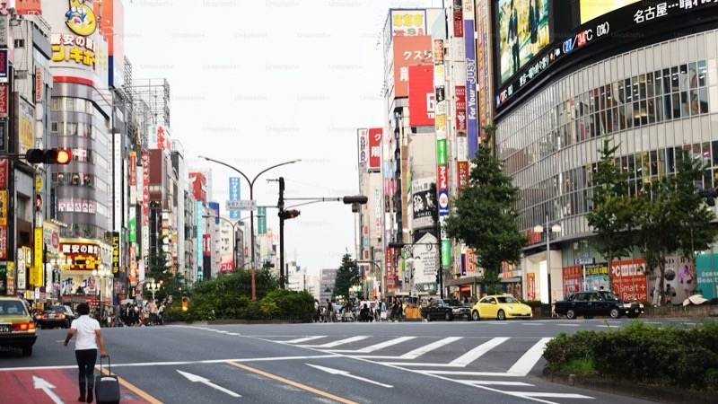
Day 2Flexible day. Explore evening nightlife around Shibuya's backstreets.
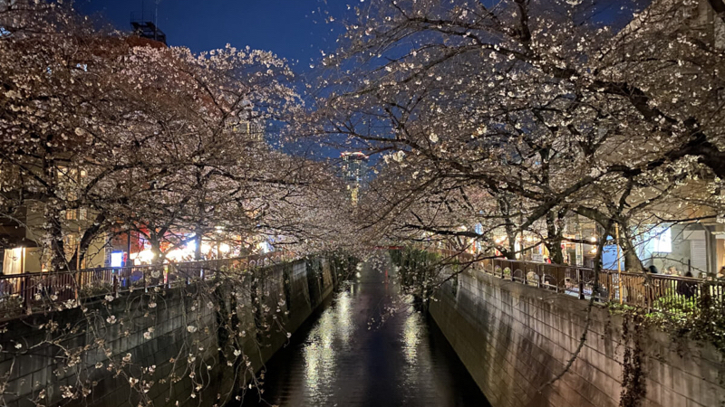
Day 3Best in afternoon/evening. Reserve ahead for popular cafes on weekends.
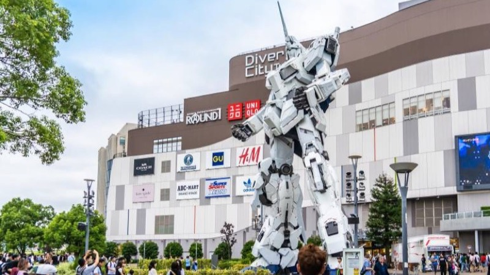
Day 4Buy Joypolis tickets online to skip the line. Gundam has scheduled light shows — check times in advance.
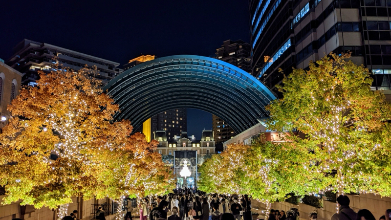
Day 5Book Mori Tower tickets online. Make dinner reservations — popular spots fill up fast.
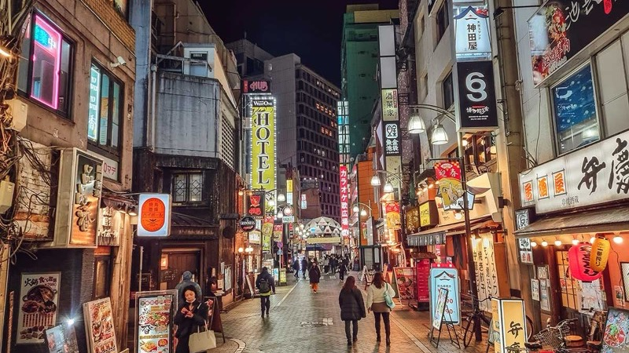
Day 6No booking needed. Go midday — Pokemon Center gets crowded in the evenings.
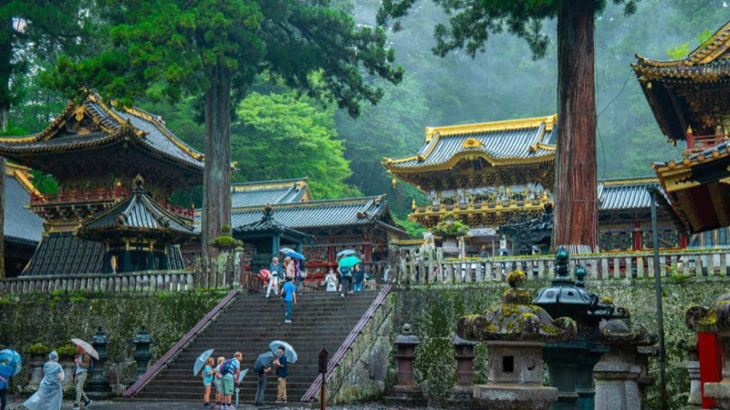
Day 7Leave early (7–8am). Consider the Nikko Pass for savings. Wear comfortable shoes — lots of walking.
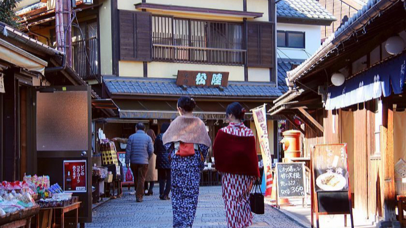
Day 8Go morning — most shops close early (~5pm). No bookings needed.
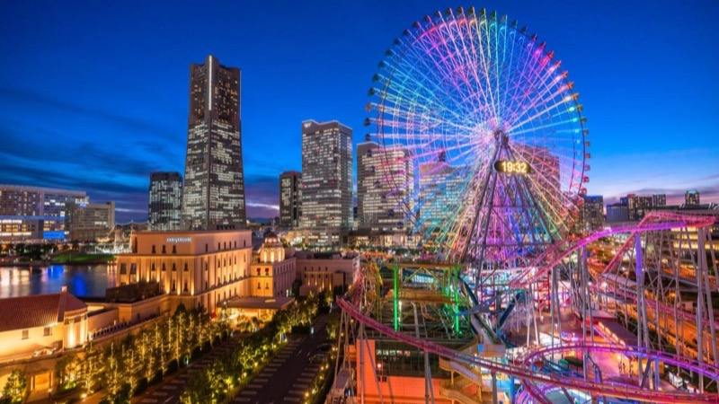
Day 9Reserve Cup Noodles Museum slot in advance. Evening skyline is spectacular.
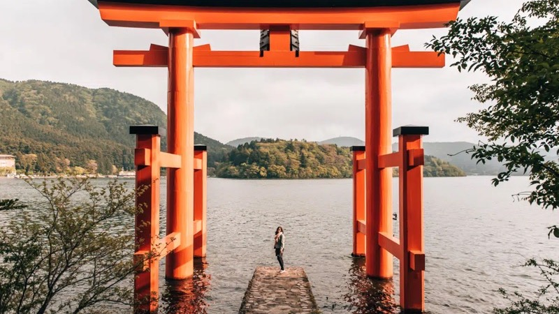
Day 10Book ryokan/onsen early — critical for availability. Use luggage forwarding to avoid carrying bags. Check weather for Mt. Fuji views.
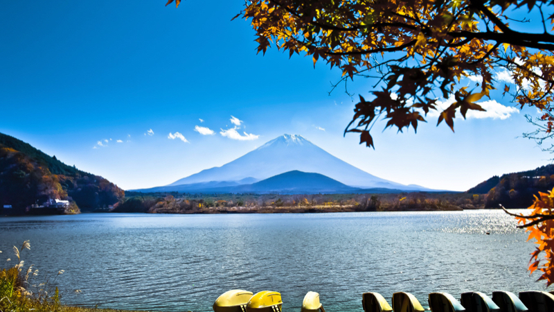
Day 11Relaxed pace today. Transfer to Kyoto in the afternoon via shinkansen.
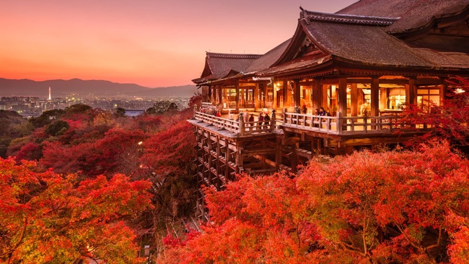
Day 12Go early morning to beat the crowds. No booking needed.
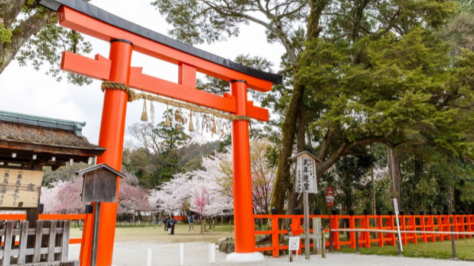
Day 13No booking needed. Rent a bike for this area — it's quieter and very pleasant.
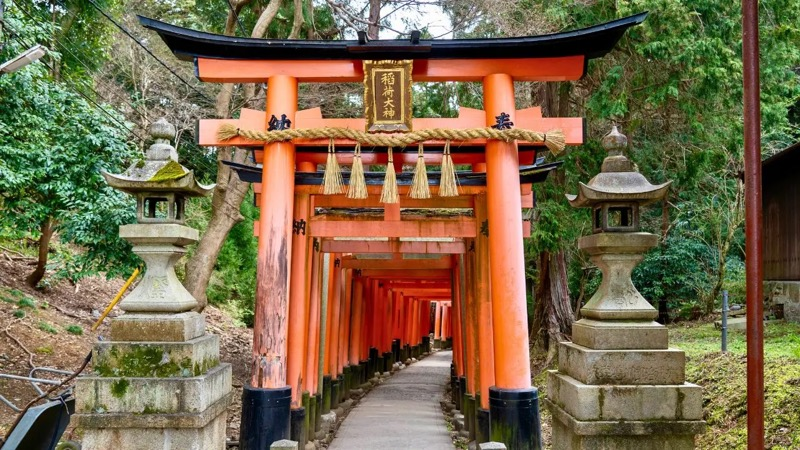
Day 14Go at sunrise for the best experience (almost empty). The full hike is 2–3 hours. No booking needed.
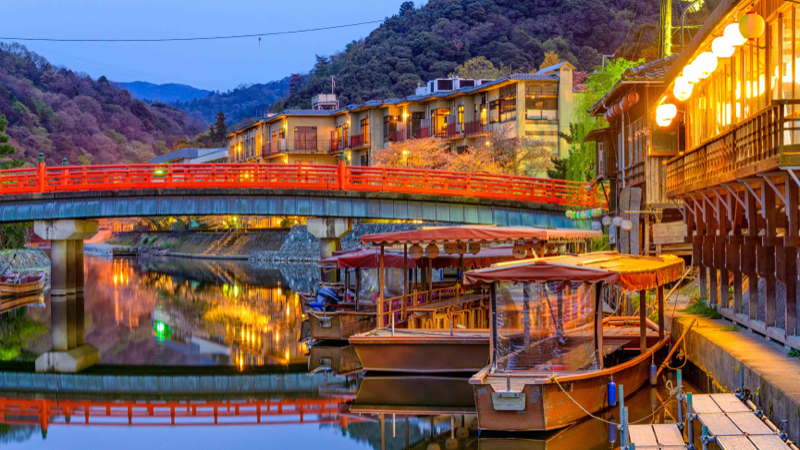
Day 15Byodo-in ticket on arrival. Check Nintendo Museum lottery system in advance if applicable.
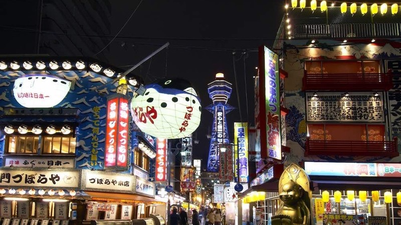
Day 16No booking needed. Tower ticket on-site. Best explored afternoon into evening when the neon lights up.
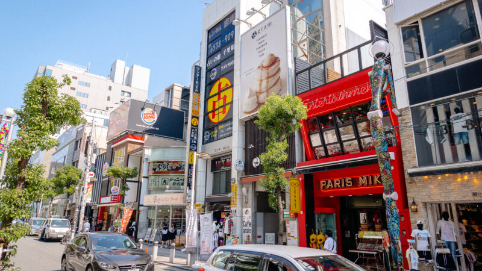
Day 17No booking needed. Flexible day — go with the flow.
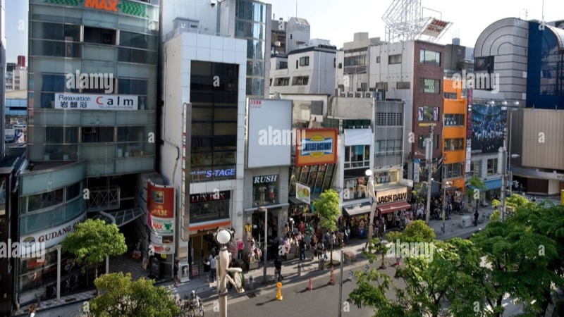
Day 18No booking needed. Bring ID (sometimes required). Last trains ~midnight — plan a taxi if staying out late.
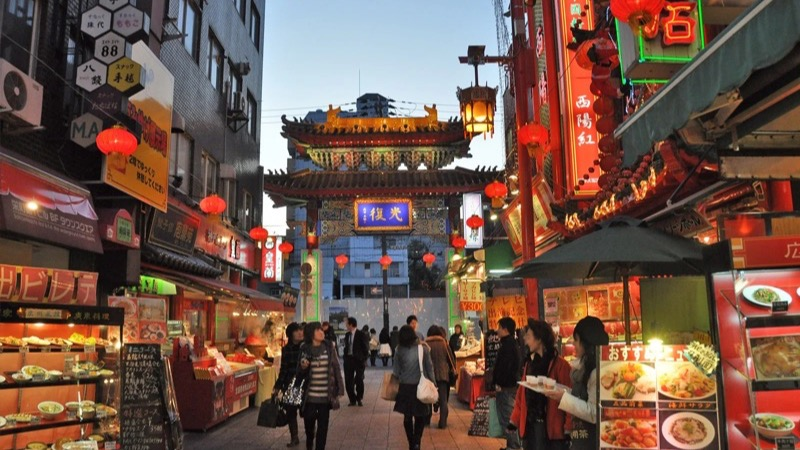
Day 19Reserve Kobe beef restaurant 2–7 days ahead — very important, top spots book out fast.
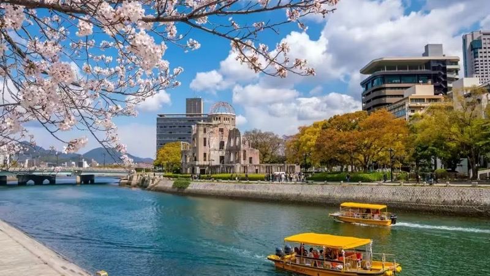
Day 20No booking needed. Allow 1–2 hours for the museum. Popular okonomiyaki spots may have a wait.
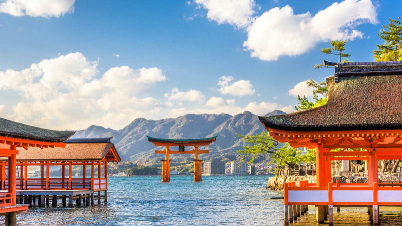
Day 21Check ferry times. Go early to beat crowds. Ropeway has set operating hours — verify before going.